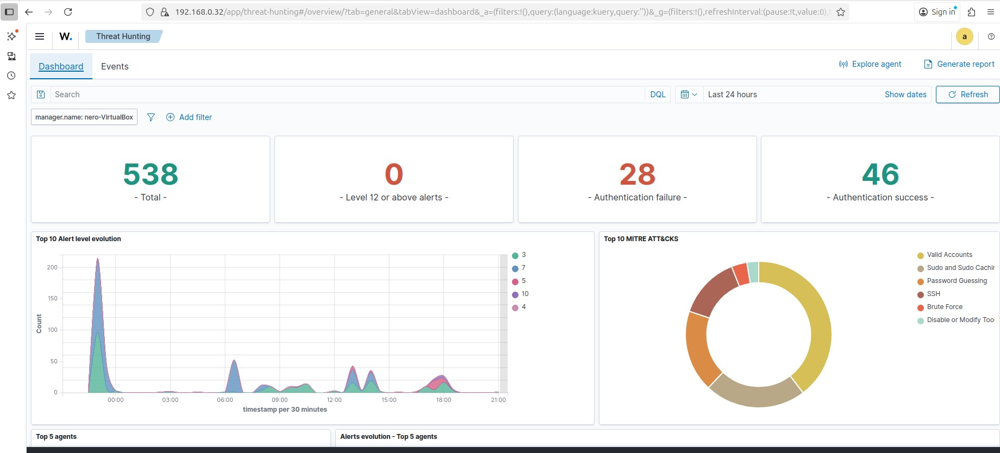

When a fake Apple security alert hits the inbox, most see a warning, I see a crime scene.
This analysis walks through how I unraveled the attack, from its social engineering hooks to its technical execution,
showcasing the critical thinking vital for a modern SOC.


Every malware sample tells a story of deception. Through static and dynamic analysis, I traced its tactics, persistence tricks, and command and control flow exposing the blueprint behind the attack and sharpening the instincts every SOC analyst needs.

Turning detection into prevention: This automated Wazuh SIEM system actively hunts and blocks malicious actors at the network edge, neutralizing threats before they can breach defenses.

Behind every cyberattack is a threat actor with a signature. MISP intelligence maps behaviors, motives, and attack flows to turn intelligence into action.